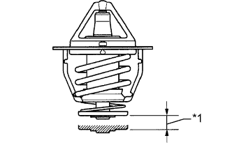

ТЕРМОСТАТ (для моделей без DPF) > ПРОВЕРКА |
| 1. ПРОВЕРЬТЕ ТЕРМОСТАТ |
Погрузите термостат в воду и медленно нагрейте ее.
Определите температуру открытия клапана.
|  |
Проверьте ход клапана.
| *1 | Высота подъема клапана |
Убедитесь, что при температуре термостата ниже 77°C (171°F) клапан полностью закрывается.